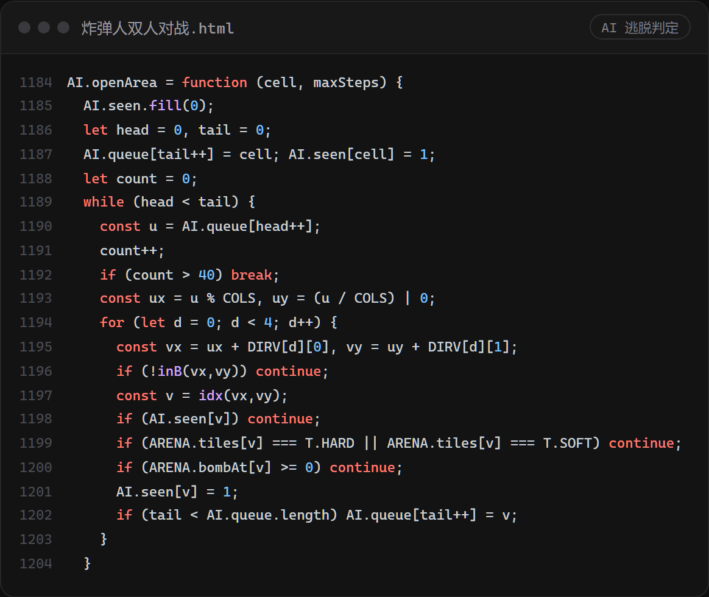
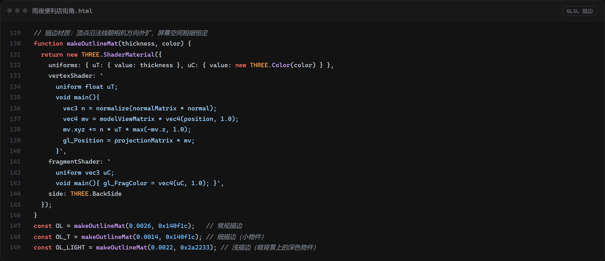
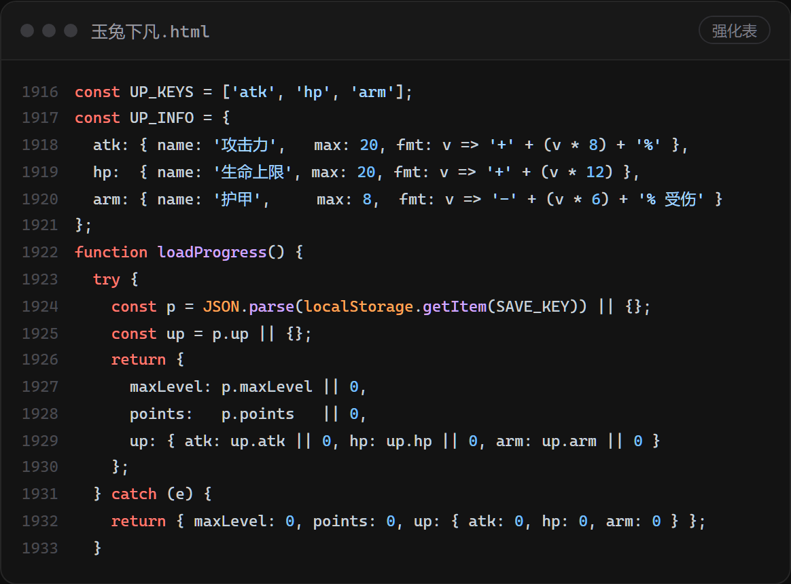
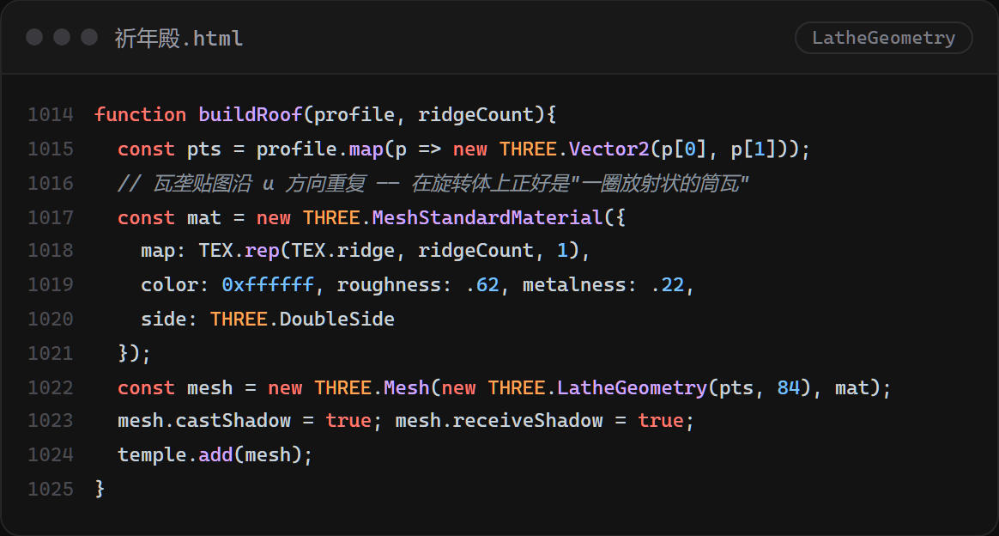
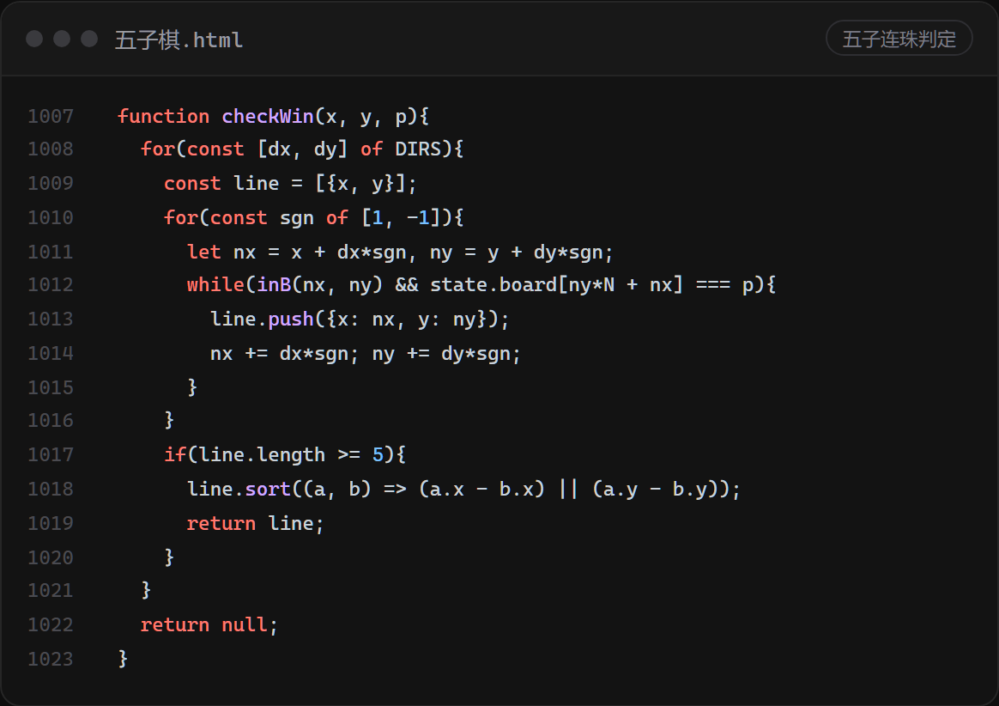

AI 逃命前，先数一遍还剩多少空地
电脑角色会躲炸弹，但光躲不够 —— 它得先确认落脚点周围还有多大地方， 否则会一头钻进自己炸出来的死胡同。

AI带你开发更简单
逻辑、画面、音效、代码、你担心的一切，AI全部搞定
源码
下面这几段是从源码里原样切出来的，就是这一页五个游戏背后真正在跑的代码。

电脑角色会躲炸弹，但光躲不够 —— 它得先确认落脚点周围还有多大地方， 否则会一头钻进自己炸出来的死胡同。

攻击力、生命上限、护甲 —— 上限和显示格式都在同一个表里。 城镇界面、存档、结算读的都是它，以后加一档不用改三个地方。

三重檐的曲线先画成一个二维剖面，绕轴转 84 段就成了屋脊； 瓦垄贴图沿 U 方向重复，正好是一圈放射状的筒瓦。

不用每一手都扫全盘 —— 从新落下的这颗出发，四个方向正反各数一遍， 连到五颗就赢。棋盘再大，这一步也只是个常数。

小游戏
每个游戏就是一个 HTML 文件，逻辑、画面、音效全在里面（目前简单的游戏才能做到一个文件），文件双击就能玩。现在我把它内置在网页里，马上就点击「打开玩」就在本页面试玩一把。

像素风横版动作，共四关：雨夜旷野、幽蓝洞窟、赤核殿堂、月蚀天穹。跑跳、二段跳之外，还有轻击、重击、气功波、冲锋、升龙、空中下劈/天降斧和雷霆天怒；击杀怪物攒经验，六级成长，死亡只清空当前经验、不掉等级。
两个人共用一台键盘打同一张地图：WASD + 空格 对 方向键 + 回车。木箱能炸开，会掉随机道具——加速、护盾、火箭筒、地雷、推箱……一局三分钟。


15×15 的木纹棋盘，两个人轮流下（🍉 对 🍍）。每回合限时一分钟，超时判负；旁边有悔棋、重开和音效开关。
雨夜的街角便利店。湿路面的反光、招牌霓虹、路灯下的雨丝都是实时算的；拖拽可以转视角，手一停它就自己慢慢运镜。


祈年殿的三维复原：三重檐、鎏金宝顶、汉白玉台基与栏杆。画面右侧有视角按钮、雷声开关，以及一键回到初始机位。
点一下画面再操作 · 按 Esc 关闭